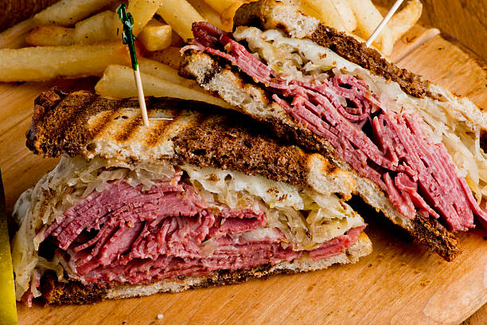

Reuben Sandwich

A classic Reuben is a sandwich consisting of corned beef, Swiss cheese, sauerkraut, Russian dressing between slices of rye bread that is grilled until the bread is crispy and the cheese melts.
Though the sandwich may be enjoyed hot or cold, we love serving it HOT. The meat is heated and cheese melts and the tangy dressing penetrates into the sauerkraut creating an irresistible grilled sandwich.
Ingredients:
- Corned Beef
- Sauerkraut
- Russian Dressing
- Swiss Cheese
- Rye Bread
How to prepare the Reuben Sandwich:
- Prepare the Russian Dressing
- Butter one side of each slice of bread
- Add the dressing, corned beef, sauerkraut and cheese to the bread and close to create a Sandwich
- Cook both sides of the bread slices as a grilled cheese until the cheese melts and bread slices are crispy
- Eat